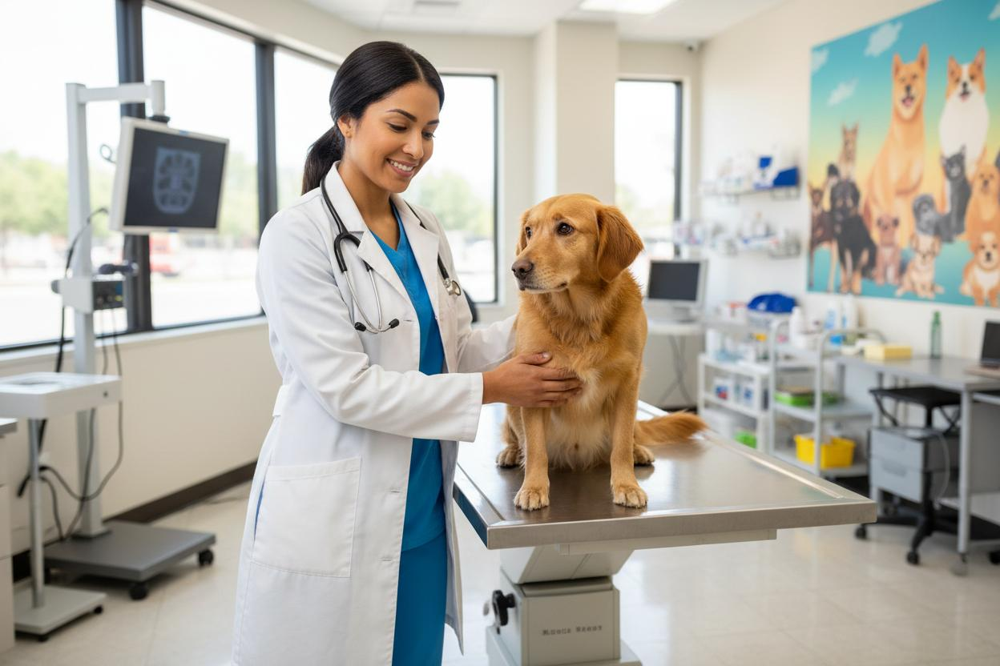
A very professional and compassionate team. My cat Luna received excellent care, and the entire process was stress-free.
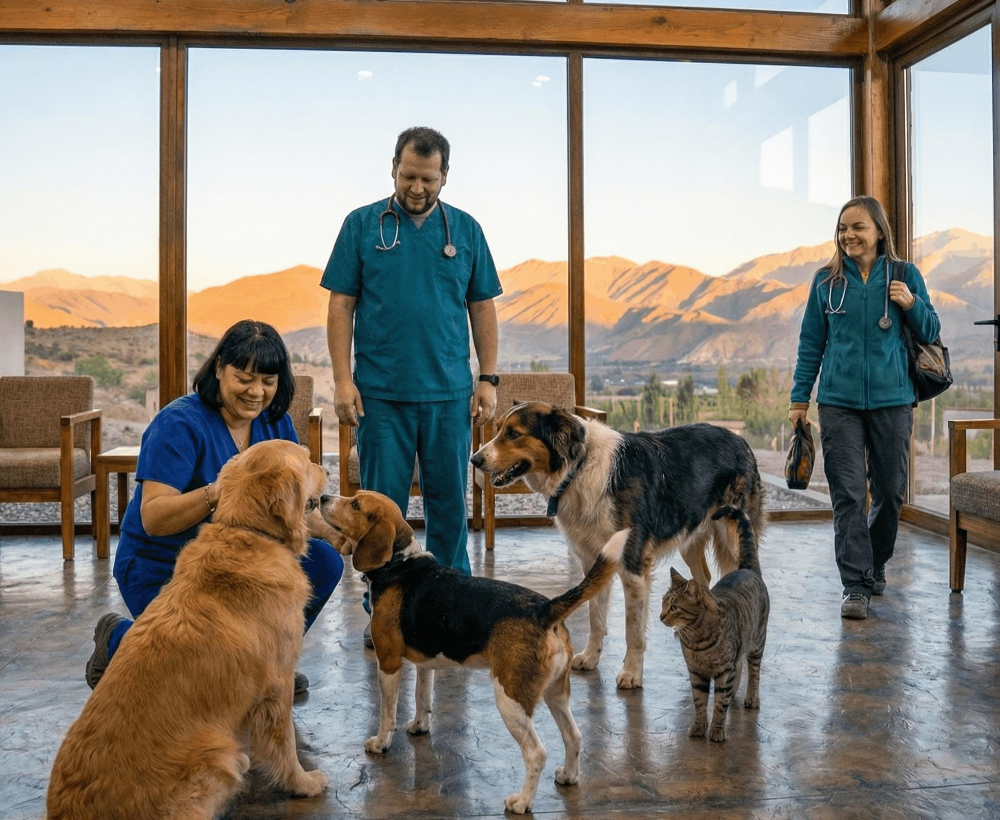
Meet the caring professionals dedicated to your pet’s health, happiness and well-being.
A team of qualified, experienced and compassionate veterinarians dedicated to providing the best care for your furry friends.

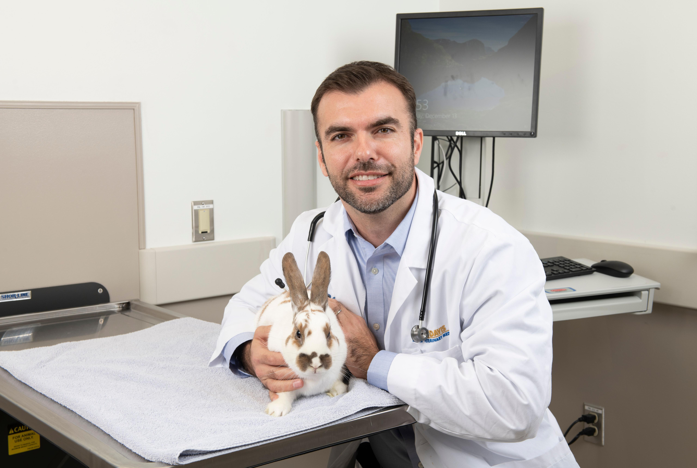
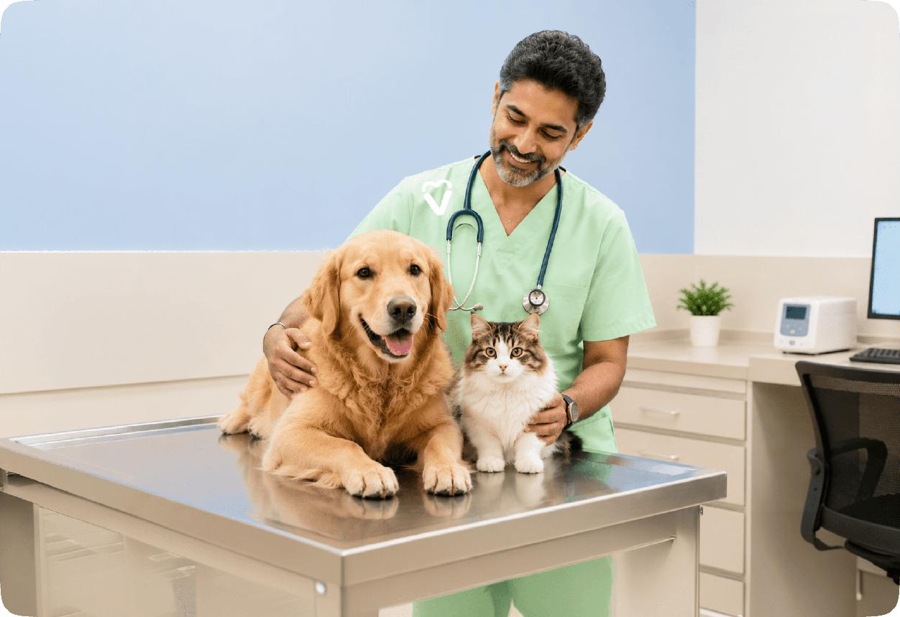
More than just treatment, our veterinarians focus on complete, long-term well-being for every pet through expertise, compassion and a personalized approach.
A simple, compassionate and comprehensive approach to ensure the best care at every stage of your pet’s health journey.
We carefully listen to your concerns and understand your pet’s health history and symptoms.
A thorough and gentle physical examination to assess your pet’s overall health.
A personalized treatment plan, including medication, care guidance and lifestyle advice.
We monitor recovery progress, provide ongoing support and ensure long-term well-being.
Comprehensive veterinary services, delivered by experienced professionals with a focus on your pet’s long-term health and happiness.

Keep your pet healthy with regular checkups, vaccinations and personalized wellness plans.
Learn More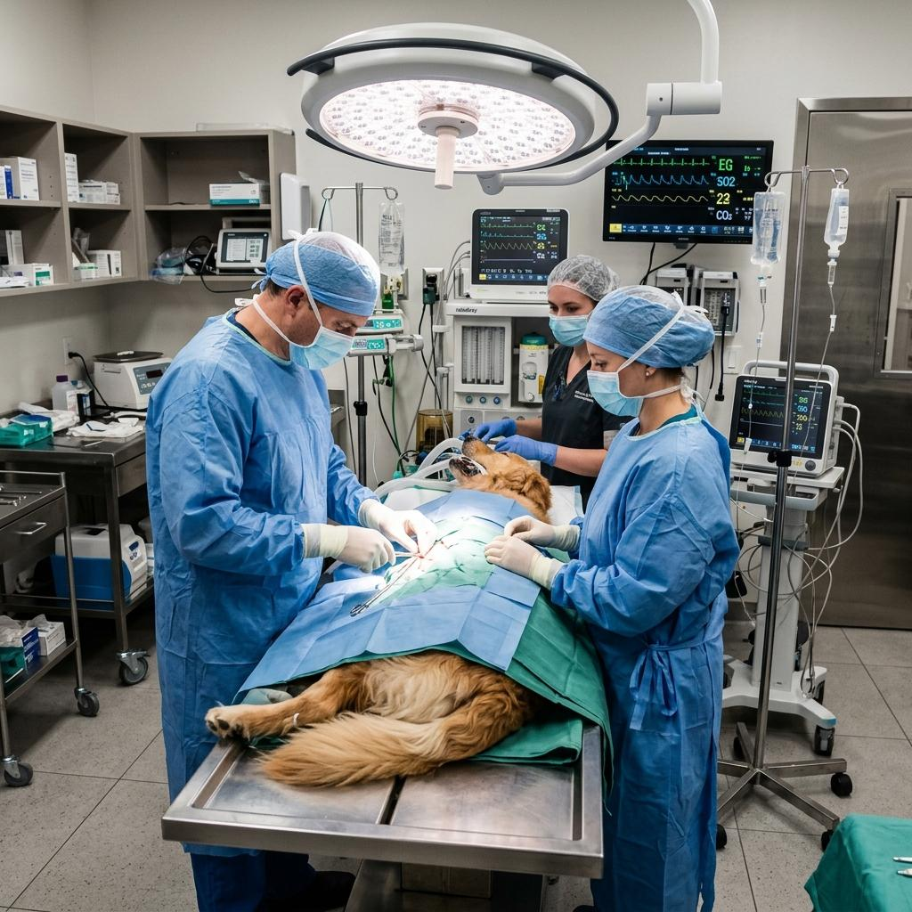
Safe and advanced surgical care for a wide range of medical conditions.
Learn More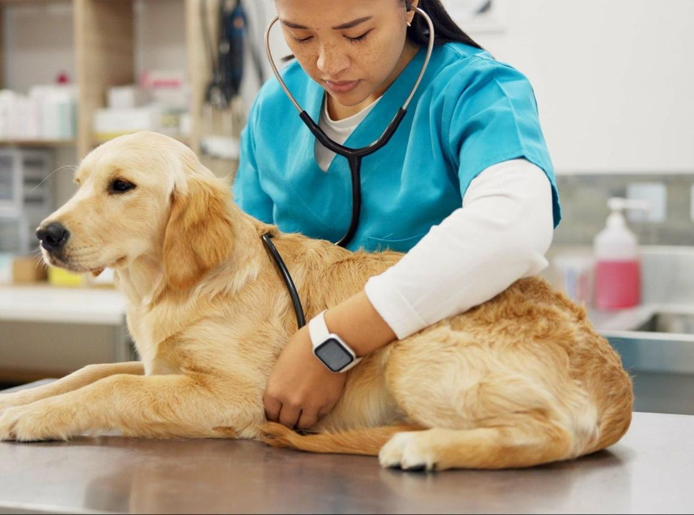
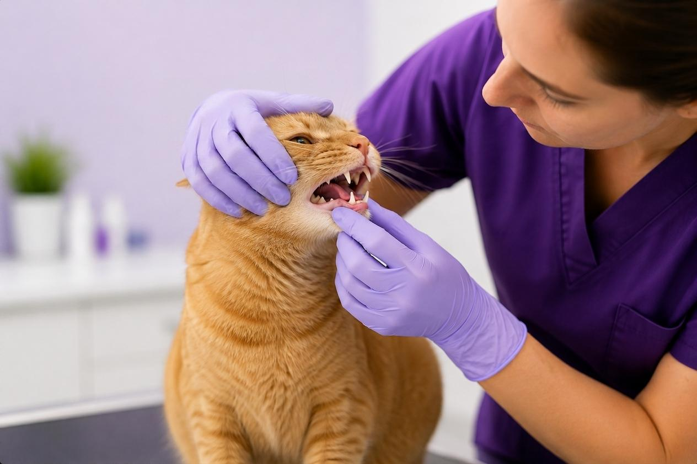
Specialized care for rabbits, birds, pigs and other small or exotic pets.
Learn More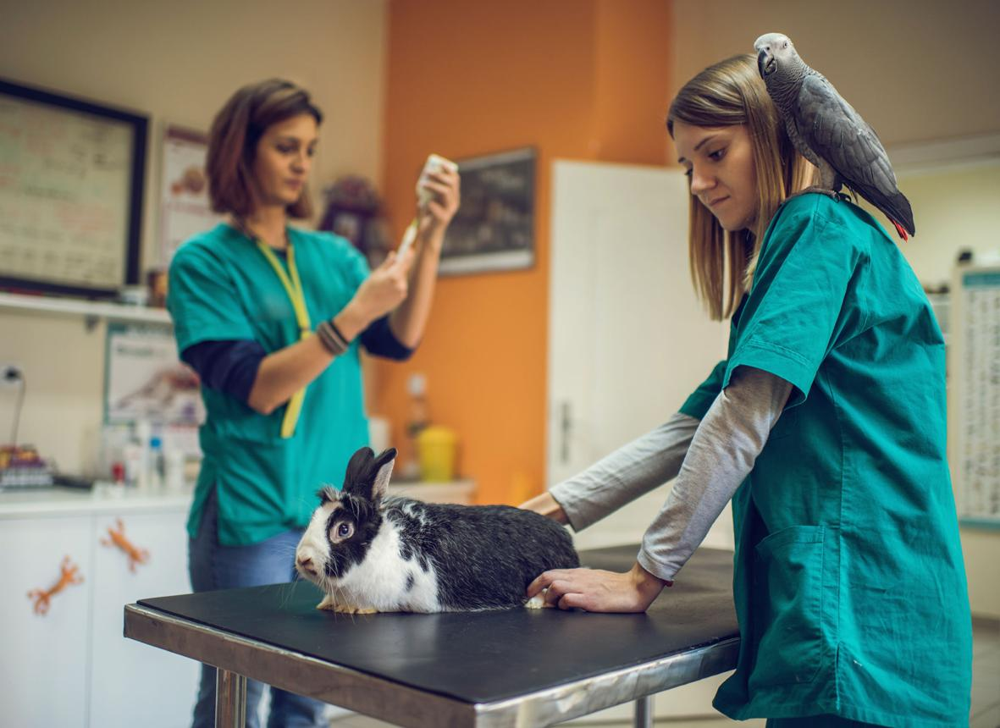
A closer look at the everyday work, care and dedication of our veterinary team in keeping pets healthy, comfortable and happy.

Daily health checks to keep your pets in the best condition.
Thorough and stress-free examinations with a care approach.
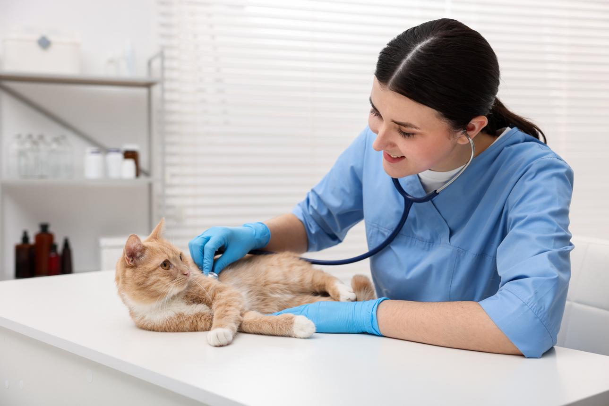
Modern diagnostics and treatments for a range of health needs.
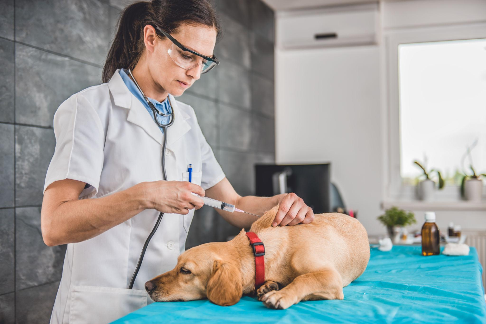
Personalized care and monitoring for a safe and speedy recovery.
Hear from our pet parents who have experienced the care, expertise and compassion of our veterinary team.
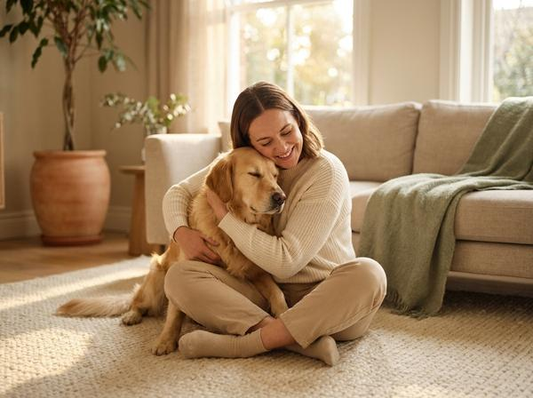
The care and attention at PawsHeal are truly unmatched. The team is patient, friendly and always explains everything clearly. My dog Nova feels safe and happy during every visit!
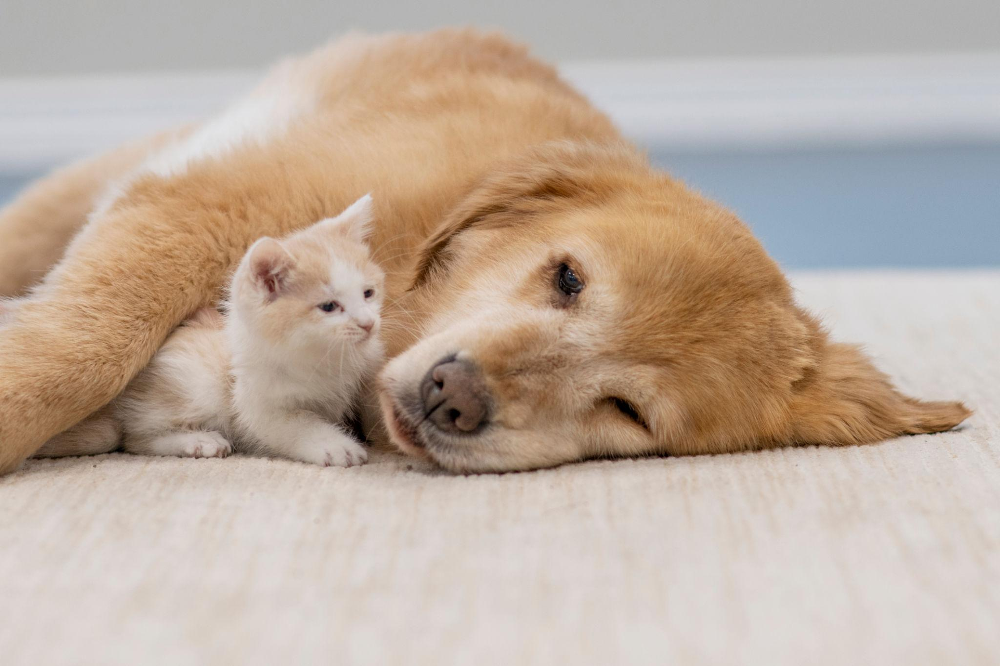
From routine check-ups to specialized treatments, our team is here to keep your furry family healthy, happy and thriving.
Book an Appointment